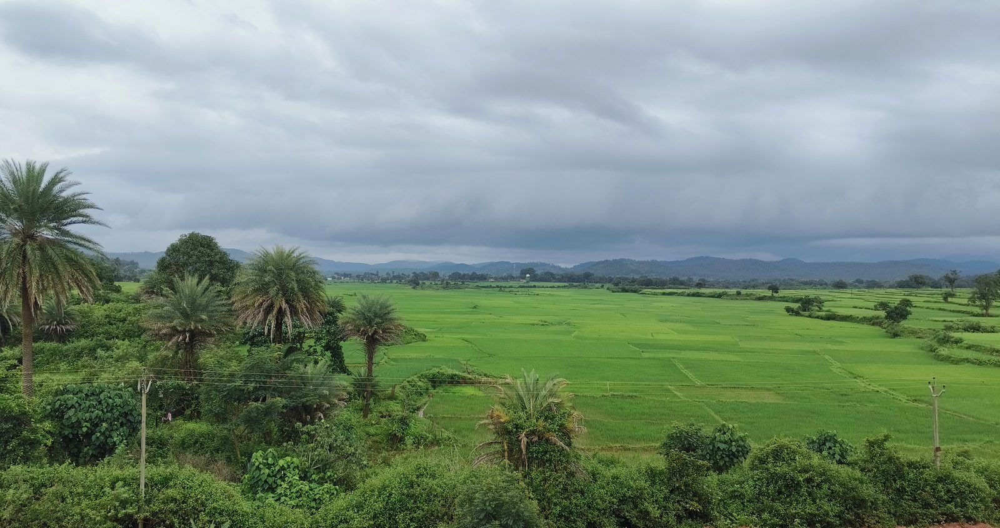
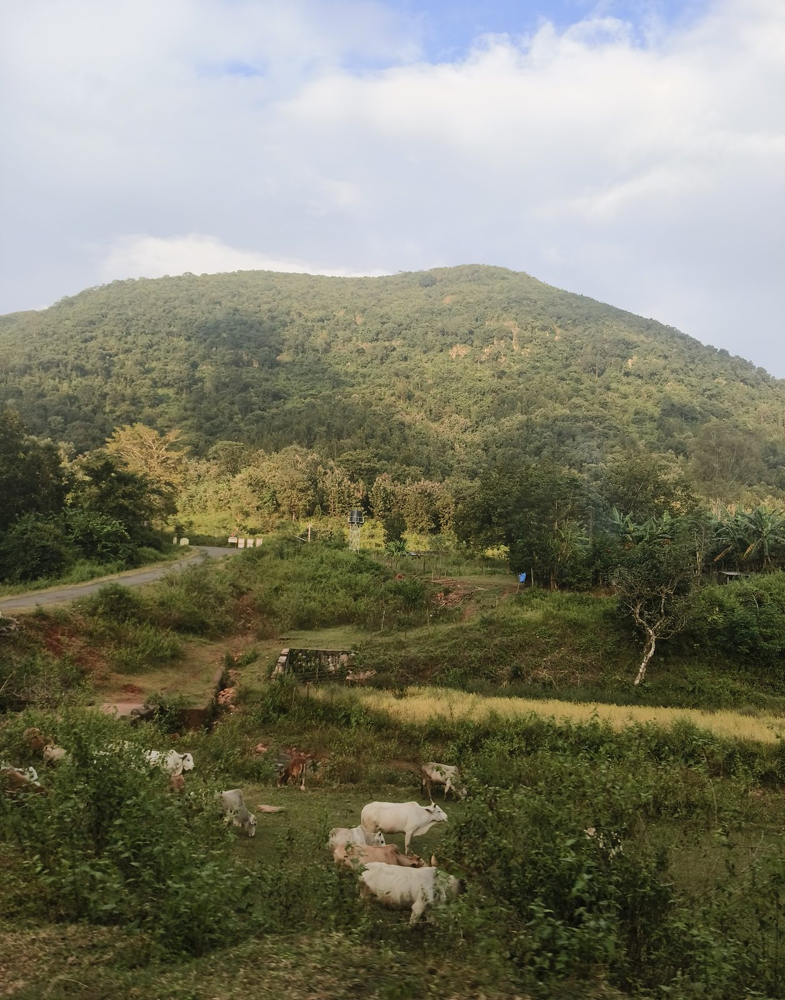
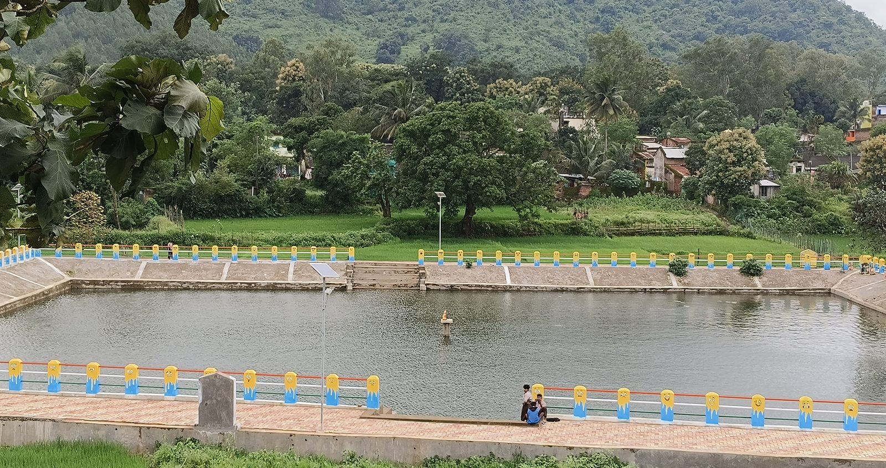
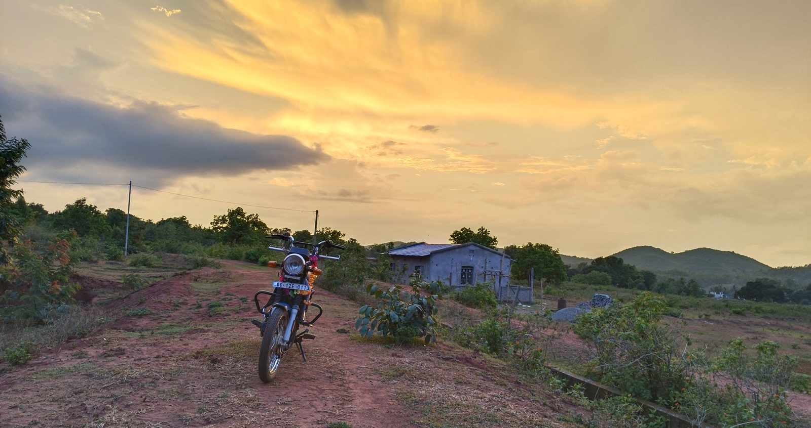

Sarangada · Kandhamal · Odisha
Maati Katha
Seven days in a village in Kandhamal, Odisha. Not a tour — you live there. It isn't open yet.
This page is what exists so far. Nothing here is a booking, and nothing is published before it is verified on the ground.
from the archive
All 42 photographs → Paddy terraced into the hillside
Paddy terraced into the hillside

The whole plain under one cloud
Cattle out below the hill, paddy turning
The tank, and the railings someone painted
The bike left on the ridge track at dusk Market road, hills behind
Market road, hills behind
 Rice, dal and greens
Rice, dal and greens
 The fire after dark
The fire after dark
from the journal
 03 August 2026
03 August 2026
The stories the soil tells
There are hundreds of stories here. They don't happen in grand, orchestrated events. They happen quietly at dawn when the mist still hangs...
Read post →
28 July 2026
Why I am building this slowly
Every version of this idea that moves fast ends the same way. Somebody books a week, arrives with a camera, gets shown a performance...
Read post →No fake experiences.
Just life as it is.
We don't host you in a village. The village absorbs you for seven days, and you leave heavier than you came.
Sarangada · Nuagaon Block · Kandhamal · Odisha
20.227°N, 84.124°E
the story the soil tells